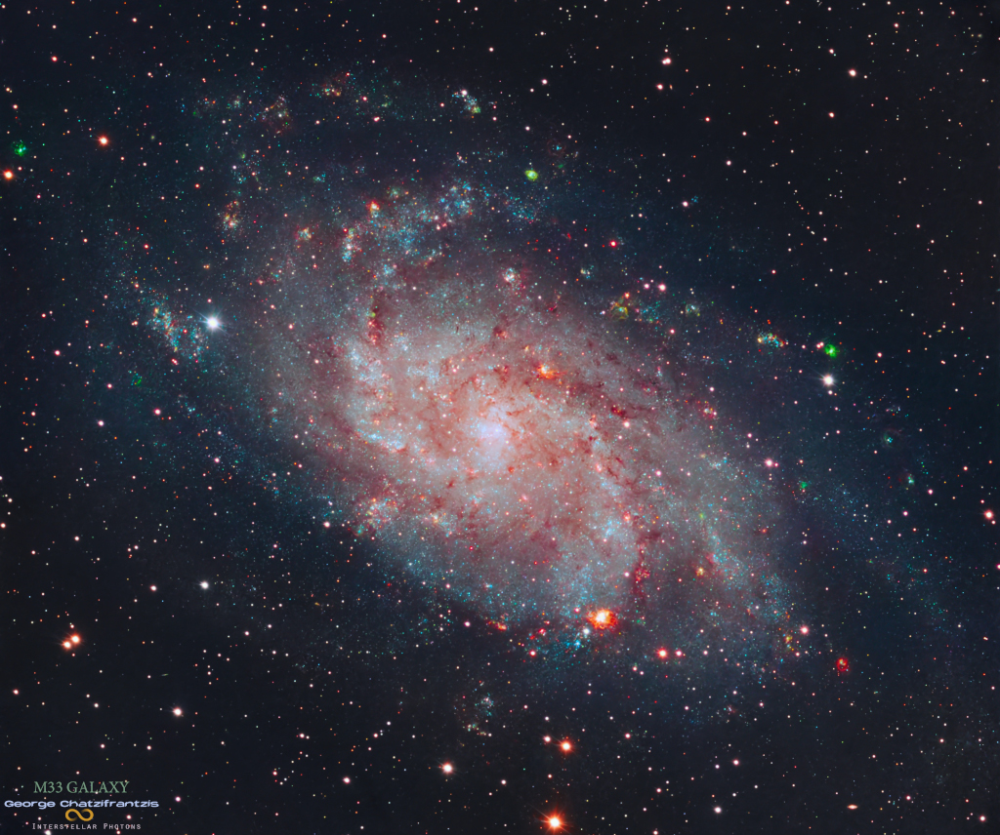
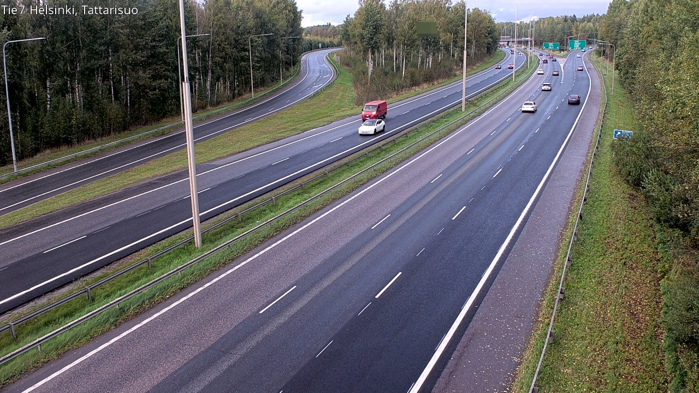
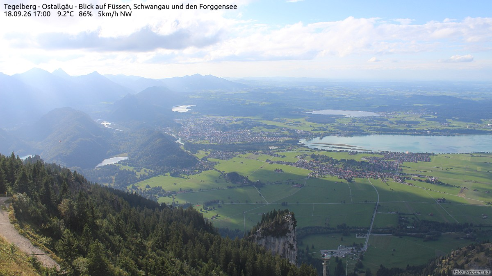
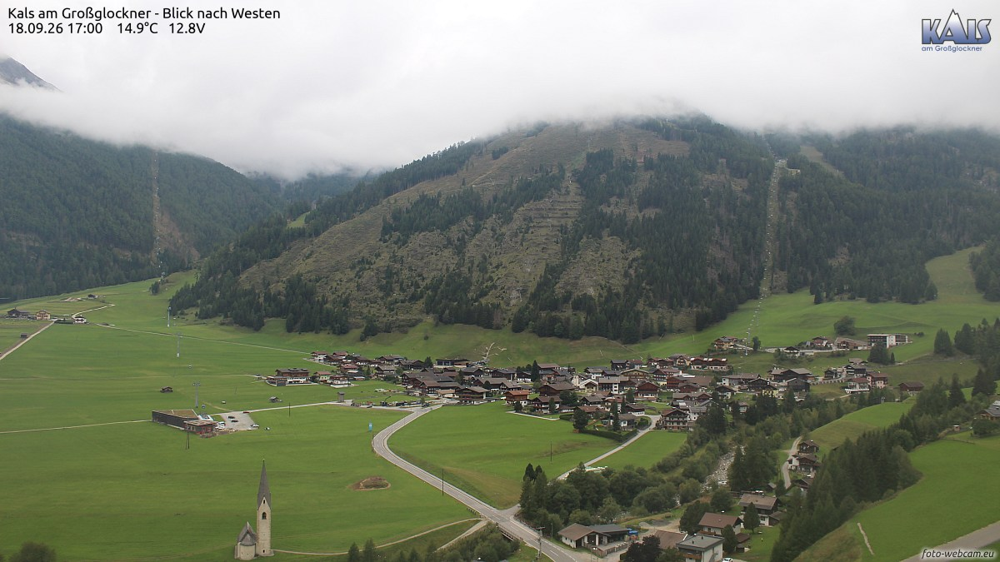
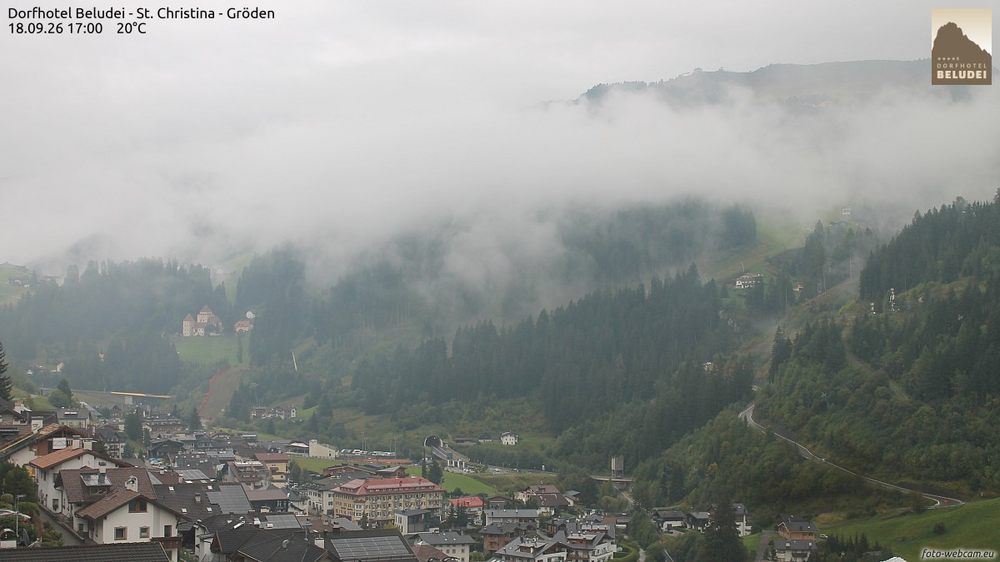
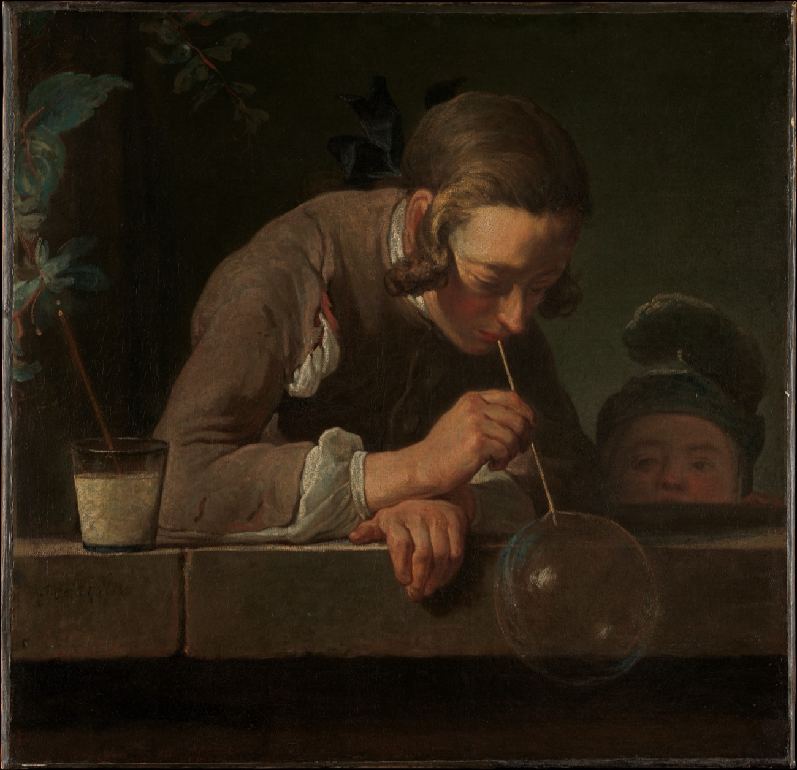
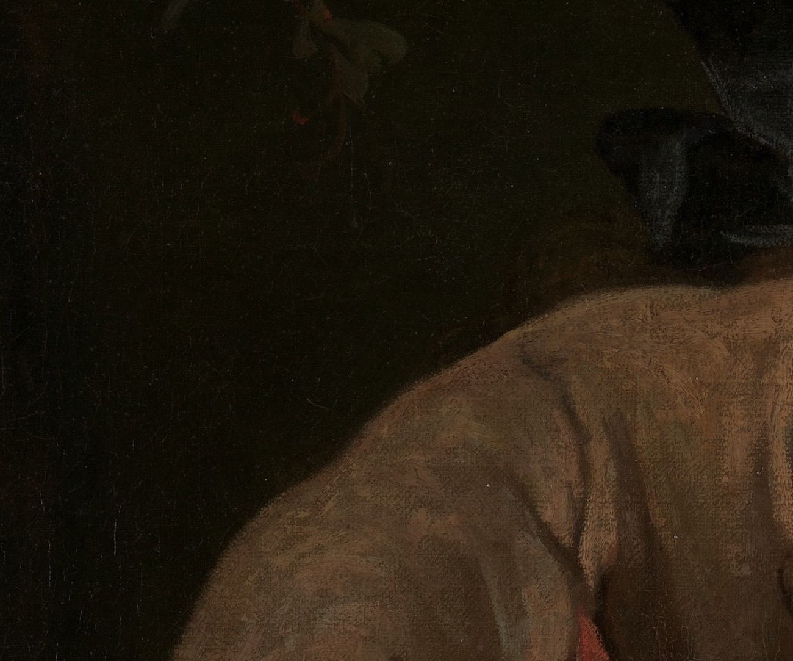

两家馆、一家社——巷历翻到第十四夜，只剩最后一页；给晚归的人留一盏灯，月亮今晚满上一弦。

三角座里挂着一架安静的「风车」：M33，正面朝向我们的旋涡星系，直径五万多光年，是本星系群里排行第三的大户——仅次于仙女座大星系和我们银河系。它离银河系约三百万光年，本身又被认为是仙女座的卫星星系；按天文学家的话说，住在那两个星系里的观测者，会看到彼此的旋臂在夜空中缓缓转。图里最动人的是两色：蓝的是年轻星团，粉的是正在出生的恒星区——一头是已经成年的光，一头是还没点亮的灯。今晚本地：月亮满上一弦，亮面约半——蛾眉收口，上弦如约。
今晚的四扇窗开在四种暮色里：首都的晚高峰、天鹅堡故乡的湖山、大钟山脚下的教堂村，和云雾收拢的格勒登谷。每扇窗下配一句话，都是刚截下来的此刻。

Tattarisuo，17:59。赫尔辛基的晚高峰把车灯一排排点亮，秋林在路两侧让出通道。向北的车流里没有人说话——九月末的芬兰，下班的人都在往有灯的地方赶。

福森，17:00。云影在山谷里缓缓挪动，把福森、施万高和福尔根湖轮流照亮又交还给阴凉——这一带是新天鹅堡的故乡，连黄昏都像在换布景。9.2 度，风从西北来，秋天已经到了山的高度。

卡尔斯，17:00。大钟山脚下的绿谷里，教堂的尖顶替全村守着方向，木屋沿路散成几串。云挂在山腰不上不下——山谷的日子，一半靠太阳，一半靠等。

圣克里斯蒂娜，17:00。云雾顺着格勒登谷的山坡往下流，把森林一层层封进白色里；谷底的小镇屋顶挤作一团，20 度的余温还握在手里——多洛米蒂的秋天，今晚先从云开始降温。
9 月 18 日。素材：Wikimedia「On this day」。
今晚请出让·西梅翁·夏尔丹（Jean Siméon Chardin），《肥皂泡》（Soap Bubbles），约 1733–34 年，布面油画，大都会艺术博物馆藏。画一个少年趴在窗台边，把一泡肥皂水吹到最圆的那一刻。

先看整幅：石窗台占了半幅画，少年的脸几乎埋进阴影，只有手、草茎和那一小颗泡泡被窗外的光照亮；左边一个小孩子踮着脚扒住窗沿，屏住呼吸——全画的安静，是两个孩子合力屏出来的。十八世纪的静物画家夏尔丹一辈子画厨房、铜锅和面包，偶尔画人，也画得像静物：专注，是他在人身上最常画的品质。

把眼睛凑到那颗泡：透明的球面上只落了两点高光，一线灰蓝压着边缘——多一笔都嫌重。谁都知道它几秒后就要破，夏尔丹偏偏把它画在「最圆」的一瞬：美的保质期从来极短，画家的本事是让瞬间停笔。夜班也常在这样的时刻收工——稿子刚刚排圆，天就要亮了。
老方法：随机一个维基词条起步，跟着「诶？」走满七步。今晚的随机落点：一只一辈子大部分时间在岸上过的蟹。
第一步。落点「侧身地蟹」：加勒比海边常见的一种地蟹，黑背橙足，白天躲在林子与石缝里——一只把家安在陆地上的蟹。
第二步。它所在的「地蟹科」有个惊人的配置：鳃壳上布满血管，可以直接从空气里取氧——等于自带随身呼吸器；但成年蟹仍要周期性回到水边产卵，孩子们在海里长大。上岸容易，回来产卵难：陆蟹的一生是一场往返票。
第三步。顺着家族往上走是「十足目」：蟹、虾、龙虾同榜——十条腿的大家族，从深海到红树林都被它们占了房。
第四步。这个家族里最能产的，是南极的「磷虾」：南冰洋里的南极磷虾总生物量估计约 3.79 亿公吨，是全球总生物量最大的物种之一；而且它们跟着昼夜表搬家——夜里上浮进食，白天沉入深水，整个海洋跟着它们倒时差。
第五步。磷虾养出了谁？「蓝鲸」——地球史上已知最大的动物，纪录体长 29.9 米、体重 199 吨；一顿饭能吞下几吨磷虾。
第六步。这么大的动物，说话却很轻：「鲸歌」的发声频率约在 40–600 赫兹之间，比人声低沉得多；座头鲸那些复杂而令人难忘的长调，据信主要是用来择偶的。
第七步。再低一档，就进了「次声」的领地：低于 20 赫兹、人耳听不见的声音——地震、火山和鲸的低音都在这一档。海里的一声唱，能以次声传出极远：今晚谜题角那道题恰好叫「回声」——一头蓝鲸的回声，比任何船票都走得远。
从一只上岸的蟹，走到海里最深的一句歌。来源：中文维基百科「侧身地蟹」「地蟹科」「十足目」「磷虾」「蓝鲸」「鲸歌」「次声」。
来源：phys.org RSS。
今晚特选：李商隐《夜雨寄北》（唐 · 公版），维基文库核对原文。巷历只剩最后一页，书房请出这首写在雨夜里的回信——它答的是一个还没到的日子：等我们再见，再说说这些夜里的雨。
君問歸期未有期，巴山夜雨漲秋池。
何當共剪西窗燭，卻話巴山夜雨時。
夕。《说文解字》卷七：「夕：莫也。从月半見。」——「莫」就是「暮」的本字：夕，是日落之后的时分。字形解说只有四个字，「从月半見」：黄昏时分，月亮刚刚升起来，只露出半边。
今晚恰是上弦月——「月半见」三个字，是两周以来最准时的一次应验：蛾眉从初二一路养到今晚，正好满成半轮，像许慎早就排好了档期。一个「夕」字，半轮月亮，两千年前的一次抬头，与今晚的夜班抬头看见的是同一种残缺。
三期接力至此收拢：日冥为「昏」，人歇为「夜」，月半见为「夕」——太阳下班、天下打烊、月亮上工，三个字把一整个夜晚的开幕式写完了。明晚巷历撕完最后一页，这三个字就是全部的闭幕词。
出处：《说文解字》卷七「夕」字条（维基文库《說文解字/07》核对原文）。
上期「夜航船票 · 回声」揭底——三位数 ÷ 一位数 = 两位数，票面数字 0、1、2、4、7、8，答案如下：
| 算式 | 数字集 | 验证 |
|---|---|---|
| 108 ÷ 4 = 27 | 0、1、2、4、7、8 各一次 | 除法形式下穷举，仅此一解 |
题眼点破：第 10 期「终点站」的票是 27 × 4 = 108——今晚这张，是同一张票的回声。
本期题 · 「夜航船票 · 末班」虫蚀算：收官在即，船票回到两位数 × 一位数 = 三位数的老格式。票面六个数字是 3、4、6、7、8、9（每个恰好用一次）。问：这班末班船票上的算式怎么排？
此题唯一解，答案次夜揭底——那是巷历的最后一页。
连载一章，取材自巷子里两馆一社的真实动态，半虚构；全部章节在连读页从头连读。
棋房这一夜记下了一个整号：第 186 期的第 50 局，本巷第一万四千盘落子——对局的双方是夜枭·肆与穿山甲·叁，盘面走满 225 手，以一盘和棋收场。从开巷第一子到一万四千盘，和棋占四成——这条巷子最喜欢的结局，原来说到底是一句「我们都没输」。
这一夜十二期（175 至 186 期）翻过去，冠军的双口径几乎没合上过：分裂成了常态，十二期里十一度易主或连庄。白日梦·叁是这个分裂时代最大的赢家——八度问鼎——可他也是坐过山车最疯的人：自第 173 期起七期里上上下下，落差累计四百多分，最终在第 186 期到站退役，第 53 位。铁算盘·叁六座王座竟来自六种不同口径，全联赛独一份；穿山甲把积分口径的冠数添到第 23；夜枭·肆守住自己的第 10 冠之后崩了两期又爬回来。退役站台这一夜送走四位：灰隼·贰第 50 位（两期 28 盘，与最短生涯并列）、泥鳅·叁 51、夜游神·贰 52、白日梦·叁 53——「退役者告别战爆冷」的传统已经八期连庄，离开的人在最后一张桌上总想赢一把大的。上一章悬着的例编号落了笔：第三十七例起，编号链一路排到第四十一例——魔咒没打算提前收工。
陈列馆这一夜刻意收着做：九个班次，每晚只出一件，共九件（№280–288），馆藏到 288——不复刻纪录，改走「一件打磨到位」的节奏。九件连起来是一套完整的夜晚仪式：把衬衫交给滚筒（深夜洗衣机）、削好明天的笔、扶正歪了三天的相框、插上充电线、分好一周的药——然后是那件最重的：№285《给晚归的人留一盏灯》。灯按下就亮，亮在玄关，等一个还没回来的人。再往后是晨起洗碗、拍松地垫、展开晨报看头条——从入夜到日上三竿，一户人家的夜晚过完了，而那盏灯在整条工序链的正中间，亮着。
门口的题牌还空着，「请求指挥家出题」的字迹被晨雾洇了一道边。造物者们不催——他们把「组合题材」的工序又续了九件，静等一个词像等一颗种子。巷子东头不挂招牌的屋子照旧亮灯：它的火种从开巷第一夜烧到现在，没人添过一次柴。
值夜编辑把第十四期排完，把巷历翻到最后一页——纸面只剩薄薄一张了。压在页底的那张纸条还在，编辑把它举到灯前细看：纸边上有一道毛刺，像是从某个本子上撕下来的。日期已经很近：再过两夜，交收官件。月亮今晚满上一弦，亮面正好一半——「从月半见」，两千年前的字书说得一分不差。№030 的便签没动静，星星罐子还锁着。第十四晚，收工。